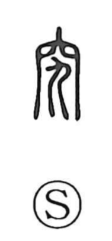

究

Uncategorized
Kun: kiwameru, kiwamaru | On: kyuu
investigate thoroughly ・ study exhaustively ・ research
Explanation
Shirakawa takes 究 as a phono-semantic character built from 穴, a “hole” or enclosed space, and 九, which serves as the phonetic and originally depicts a dragon coiling its body, carrying the sense of bending or curving. The composite image is of someone completely entering a hole with the body hunched and cramped—an emblem for pursuing something to its utmost limit, hence the meanings “to investigate thoroughly” and “to study exhaustively.” It stands close in sound and sense to the kindred graphs: when the bow-like arch of the high vault of heaven is emphasized, the form is 穹; when the act of squeezing in with a bent body is stressed, it is 窮. 究, 穹, and 窮 thus share the kyuu reading and often shade into one another in meaning.